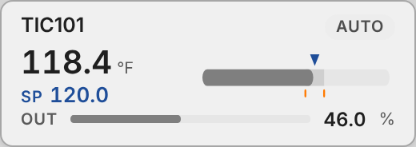

<figure class="card" id="Templates_Loops_Loop_B2_Horizontal"><div class="view" style="width:240px;height:85px"><div class="stage" style="width:260px;height:92px;transform:scale(0.9231)"><div class="hit" style="position:absolute;inset:0;pointer-events:none" title="click: open dynamic window"></div></div></div><figcaption><code>Templates/Loops/Loop_B2_Horizontal</code><br><b class="ok">T_PID</b> &middot; dynamic window <code>dw_Loop</code><br>click symbol: open dynamic window<br><i>render of the real view</i></figcaption></figure>